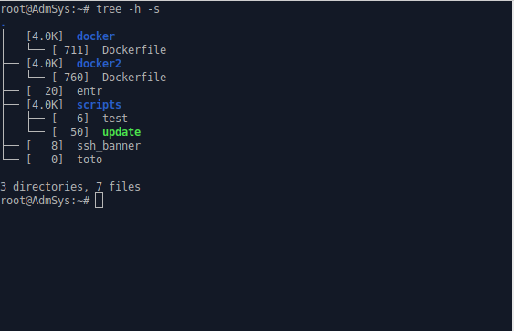
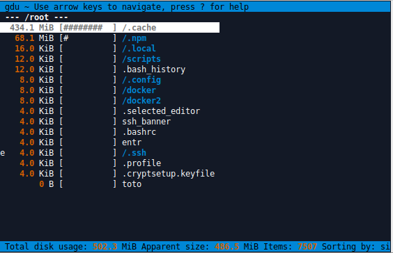

CM1 : Commandes Shell
Interagir avec le poste de travail
Le poste de travail
Les postes de travail sont les ordinateurs sur lesquelles vous travaillez, ils possèdent :
- un processeur (CPU) : exécute des instructions ;
- une puce ou carte graphique (GPU) : gère l'affichage ;
- une mémoire vive (RAM) : stocke des données temporaires ;
- des supports de stockages (e.g. SSD) : sur lesquels sont enregistrés des fichiers ;
- une puce ou carte réseau : gère le WiFi, Bluetooth, et Ethernet.
La carte mère relie ces différents composants et fourni des ports permettant de brancher des périphériques (devices) :
- USB : pour les claviers, souris, disques externes, etc.
- RJ45 : pour les câbles Ethernet.
- HDMI/Display Port/VGA : pour les écrans.
Tous ces composants matériels sont gérés par le Système d'exploitation (Operating System), e.g. Windows, Linux, etc.
Interface CLI
On distingue 3 manières d’interagir avec un ordinateur :
- GUI : interface graphique (Graphical User Interface) ;
- CLI : interface en lignes de commande (Command Line Interface) ;
- TUI : interface textuelle (Text-based User Interface) ;
Les lignes de commandes sont des instructions textuelles. Elles présentent de nombreux avantages par rapport à une GUI :
- on peut copier/coller des lignes de commandes (c'est du texte).
- les lignes de commandes sont indépendantes de la langue de l'utilisateur (i.e. pas de traductions).
- on a toute la puissance qu'offre un langage de programmation (variables, conditions, boucles, etc).
- on peut automatiser une série d'instructions en enregistrant les lignes de commandes dans un fichier (script).
Il est possible que l'ordinateur n'ai tout simplement pas de GUI. Cela est usuellement le cas pour les serveurs, ce qui permet d'en économiser les ressources (GPU/CPU/RAM/réseau) et de réduire les surfaces d'attaques.
Le terminal
Shell vs Terminal
- Le Shell est le programme qui va interpréter et exécuter les lignes de commandes que vous écrirez.
- Le Terminal (ou console) est l'interface graphique qui permet de faire le lien entre l'utilisateur et le Shell. Il vous permet d'écrire des lignes de commandes qui seront envoyées au Shell, puis d'en visualiser le résultat.
🕮 Historiquement, les premiers ordinateurs avaient la taille d'une pièce (e.g. 160m²). Des consoles constituées d'un clavier et d'un écran permettaient d’interagir avec l'ordinateur (mainframe). Vous pouvez voir le shell comme le mainframe, et le terminal comme la console permettant d'interagir avec le mainframe.
Utilisation du terminal
Recopier à la main des commandes est sources d'erreurs et de fautes de frappe. Il convient d'utiliser autant que possible les 3 fonctionnalités suivantes :
- Copier-coller le texte sélectionné ( et ).
⚠ arrête la commande en cours d'exécution.
💡 Le clic-milieu ou clic-molette de la souris copie/colle le texte sélectionné. - Auto-complétion des commandes et chemins ().
💡 affiche les différentes possibilités d'auto-complétion. - Historique : ou pour parcourir l'historique des lignes de commandes exécutées ( pour réexécuter).
💡 ou permettent de modifier la ligne de commande.
Le Shell
La ligne de commande
Une ligne de commande est une manière de formuler, par le biais d'une ligne de texte, une instruction à exécuter. Elle est assimilable à l'appel d'une fonction, avec :
- une commande à exécuter (≈ une fonction à exécuter) ;
- des arguments passés en paramètres de la commande.
Quand l'ordinateur interprète une ligne de commande, il exécute la commande indiquée par le premier élément, en lui transmettant les arguments sous la forme d'une liste de chaînes de caractères.
🕮 Les arguments sont les valeurs qu'on transmets (appel) aux paramètres d'une commande/fonction (définition).
⚠ Sa syntaxe est différente des appels de fonction dont vous avez l'habitude en R ou en Python. En effet, les différents éléments ne sont pas séparés par une virgule, mais par un espace :
- Fonction python : ;
- Ligne de commande : .
⚠ Quand un argument inclus un espace, il convient de le mettre entre guillemets simples ou de l'échapper :
L'invite de commande
L'invite de commande (ou prompt) indique que l'utilisateur peut saisir une ligne de commande. Elle se termine généralement par ou , et peut être personnalisée. Par exemple indique :
- l'utilisateur () ;
- le nom de l'ordinateur () ;
- le répertoire actuel ().
💡 se lit "at" en anglais et indique un lieu. Par exemple une adresse mail signifie :
"le compte qui se trouve sur le serveur ".
"le compte qui se trouve sur le serveur ".
CLI vs TUI
Vous pouvez utiliser deux types d'interfaces au sein d'un terminal :
- CLI (Command-Line Interface) : lignes de commande.
- TUI (Terminal User Interface) : interactif, avec le clavier et la souris.
CLI (commande )

TUI (commande )

💡 Les interfaces TUI sont moins "standard", mais sont plus ergonomiques. Afin de faciliter votre apprentissage, nous essayerons de proposer des alternatives ergonomique lorsque possible.
Lire la documentation
La documentation s'utilise très simplement :
- recopier la structure de la commande souhaitée ;
- remplacer les encadrés par la valeur souhaitée.
Nous utilisons les notations suivantes :
- // : accepte une liste de valeurs séparées par un espace/virgule/point virgule.
- : l'argument est facultatif.
- : indique une alternative.
| Structure | Exemple |
|---|---|
Quelques commandes utiles
La documentation
- : affiche le type de la commande .
- : affiche la documentation de la commande (si son type est ou ).
- : affiche la documentation de la commande (si son type est ).
- : une version simplifée de et .
Le terminal
- : efface le contenu du terminal.
- : réinitialise le terminal.
- : quitte le Shell actuel.
L'historique
- : affiche l'historique des dernières lignes de commandes exécutées.
- : réexécuter la dernière commande exécutée.
- : réexécute la dernière commande exécutée.
Les fichiers
Manipuler les fichiers
Sous Linux, il existe un ensemble de commandes standards permettant de manipuler les fichiers :
- (make directory) créer un dossier vide ( créer les dossiers parents si inexistant).
- créer un fichier vide.
- (remove) supprimer des fichiers.
- (copy) copier des fichiers.
- (move) déplacer des fichiers ( target).
- rechercher (récursivement) dans les fichiers correspondant à .
💡 Certaines de ces commandes acceptent les arguments suivants :
- (recursive) : si dossier.
- (target) : est le dossier dans lequel placer (ou sa copie).
- (not target) : est le nouveau chemin de (renomme le fichier lors de la copie/déplacement).
⚠ Les fichiers supprimés via ne sont pas placés dans la corbeille et sont donc supprimés définitivement.
À la place, il est ainsi recommandé d'utiliser la commande afin de déplacer les fichiers dans la corbeille.
À la place, il est ainsi recommandé d'utiliser la commande afin de déplacer les fichiers dans la corbeille.
Éditer un fichier
permet d'éditer le fichier en ouvrant un éditeur interactif qu'on peut quitter via :
Raccourcis claviers indiqués en bas de la fenêtre.
Les chemins
Chemin absolu
Sous Linux tous les fichiers sont, directement ou indirectement, contenus dans le dossier racine (root directory), noté :
📂 /
└── 📂 tmp
└── 📂 foo
├── 📄 faa
├── 📂 fee
├── 📄 fii
└── 📄 fuu
Le chemin absolu (absolute path) identifie alors un fichier par son emplacement par rapport à la racine, i.e. en partant de la racine, le chemin à emprunter pour atteindre ce fichier. Ainsi, pour atteindre le fichier , il faudra partir de la racine , puis aller dans les dossiers , puis , pour enfin atteindre , donnant ainsi le chemin absolu : .
💡 Par convention, lorsque le chemin désigne un dossier, on le suffixera par , e.g. .
⚠ Lorsque vous utilisez un chemin absolu dans vos scripts, il n'y a aucune garantie que le fichier visé soit placé exactement au même endroit d'un ordinateur à l'autre. Il convient ainsi d'éviter les chemins absolus dans vos scripts.
Chemin relatif
Sous Linux, le dossier de travail (working directory), noté , désigne le dossier dans lequel on se trouve actuellement.
💡 Ce dossier est usuellement indiqué dans l'invite de commande :
demigda@demigda-Latitude-5400:/tmp/foo$
💡 La commande (print working directory) permet d'afficher le dossier de travail :
$ pwd /tmp/foo
💡 La commande (list) permet de lister le contenu du dossier (dossier de travail si non indiqué).
$ ls /tmp/foo 📄faa 📂fee 📄fii 📄fuu
💡 La commande (change directory) permet de se déplacer dans le dossier .
Le chemin relatif (relative path) identifie alors un fichier par son emplacement par rapport au dossier de travail, i.e. en partant du dossier de travail, le chemin à emprunter pour atteindre ce fichier. Ainsi, pour atteindre le fichier , à partir de , il faudra partir du dossier de travail , puis aller dans le dossier , pour enfin atteindre , donnant ainsi le chemin relatif : .
💡 représente le parent d'un dossier. Ainsi, à partir de , désigne le dossier .
Ensemble de chemins
Lorsqu'on souhaite manipuler plusieurs fichiers à la fois, e.g. via , , , etc. on préfère éviter d'avoir à écrire leurs chemins uns à uns. Pour cela on utilise les caractères de remplacements (wildcard) :
- : représente 0 à plusieurs caractères, e.g. : tous les fichiers d'extension ".txt".
- : représente 0 à plusieurs dossiers, e.g. : le fichier "foo.txt" dans un des sous dossiers.
- : représente une alternative, e.g. : "foo.txt" ou "faa.txt" dans le dossier courant.
💡 Afin d'éviter les erreurs dans la saisie d'un chemin, il est très vivement encouragé d'utiliser l'auto-complétion du shell.
Arborescence
Arborescence Linux
Les fichiers sous Linux sont usuellement organisés de la sorte :
Votre home
Votre home est usuellement contenu dans le dossier , et est usuellement organisé de la sorte :
💡 est un alias représentant le chemin absolu du home de l'utilisateur (utilisateur actuel si non précisé).
💡 Les fichiers commençant par sont des fichiers cachés. Par défaut, ils ne s'affichent pas dans votre explorateur de fichier. pour les afficher (all).
⚠ On ne TOUCHE PAS les fichiers inconnus, même pour faire de la place.
Votre quota à l'UCA
Sur les postes de travail UCA, vous disposez de 2 dossiers personnels :
- (2Go) : votre home, sauvegardé régulièrement.
- (20Go) : à privilégié pour les fichiers volumineux.
⚠ Atteindre son quota expose à des erreurs informatiques lors des TP. Pensez ainsi à régulièrement vider votre corbeille ainsi que votre dossier de téléchargement.
💡 La commande permet de visualiser les fichiers et dossiers les plus volumineux.
Politique d'organisation de vos fichiers
Il est important de ne pas enregistrer tous ses fichiers dans le même dossier, mais d'avoir une politique d'organisation de vos fichiers, et de s'y tenir. C'est à dire de définir une structure organisée, cohérente et consistante de votre dossier .
Voici un exemple de structure que vous pouvez adopter :
Cela facilite les opérations de recherche, de sauvegardes, et d'archivage. Notamment, peut vous éviter de rendre le mauvais fichier lors d'un TP...